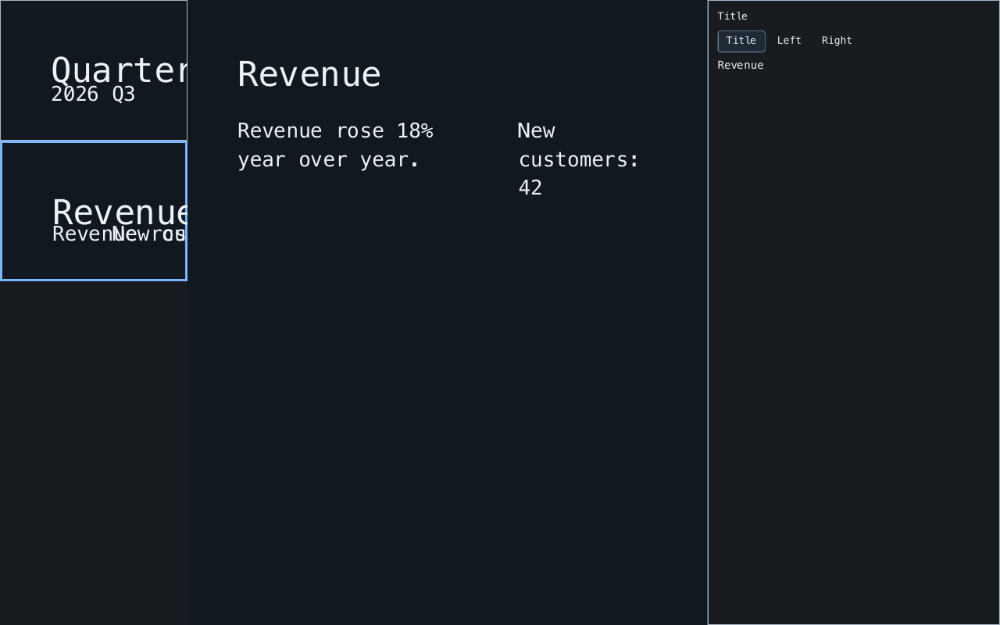

Choose a layout
Use eight templates selected from your content, or opt in to freeform placement. Three built-in themes control color, typography, and spacing.
Build and edit presentations from ordinary Markdown files. Hadar keeps the source in place while you preview, present, and export the deck.
Start with an ordinary Markdown file.
gem install hadar
ruby present.rbCRuby 3.2+ · Ruby library, preview, and headless export
Create your presentation script
Hadar is a Ruby library for apps that need editable decks and reliable output.
Use eight templates selected from your content, or opt in to freeform placement. Three built-in themes control color, typography, and spacing.
Text, images, tables, code blocks, and speaker notes stay connected to the Markdown they came from.
Use live preview, keyboard navigation, and a presenter view that shows the next slide and your notes.
Produce searchable PDF pages, a PNG sequence, or an animated PNG from supported layouts.
Requires CRuby 3.2 or newer. Hadar is a library; it does not install a command-line executable.
gem install hadar